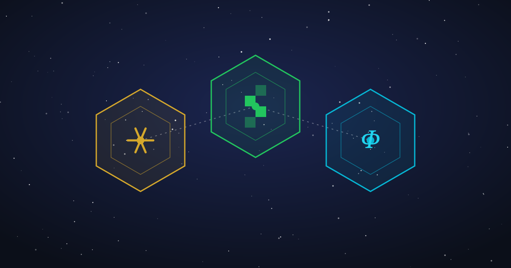
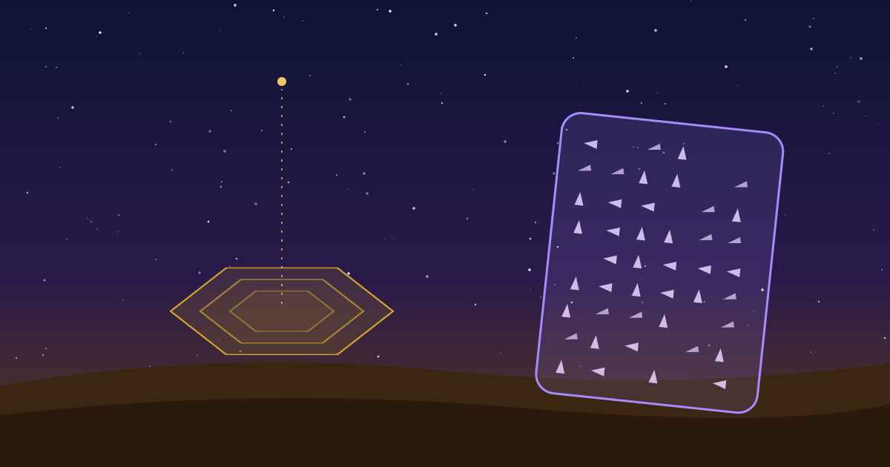

Ficción · Estrategia · Ciencia
Ellian Lessel
Mitos que guardan memoria. Tableros que piensan en tiempo real. Civilizaciones medidas por su eficiencia. Tres universos, un mismo rigor.
Ciencia ficción dura entrelazada con la mitología comparada, la estrategia del ajedrez aplicada al fútbol y una nueva forma de clasificar a las civilizaciones del cosmos. Los tres libros ya están disponibles en Kindle.

Ad Primordia
Una voz sepultada seis mil años bajo el polvo de Mesopotamia. Ciencia ficción dura y mitología comparada.

El tablero de césped
Un tablero de 64 casillas sobre el campo. El ajedrez convertido en sistema operativo del fútbol.

La eficiencia espaciotemporal
Seis variables y una Ecuación Maestra para medir el avance de cualquier civilización.
Catálogo oficial
Tres obras, tres mundos
Elegí tu puerta de entrada. Cada libro está disponible en formato Kindle; las ediciones impresas llegan en las próximas semanas.
Explorador interactivo · La eficiencia espaciotemporal
La Ecuación Maestra
Para Kardashev, una civilización avanza cuanta más energía consume. Este ensayo propone otra medida: con cuánta eficiencia la emplea. Tocá cada variable para descubrir qué mide y qué ley física le pone techo.
Índice de Eficiencia Espaciotemporal (Φ). La raíz equilibra energía, tecnología y cognición: si una cae a cero, el índice colapsa. La fracción premia la extensión que se mantiene cohesionada y la eficiencia entrópica.
6 variables fundamentales · componen Φ
4 variables complementarias · fuera de la ecuación
Los Grados de Eficiencia Espaciotemporal
Seis Grados, del 0 al 5, con criterios físicos aplicables a cualquier civilización del universo. Tocá un Grado.
La Teoría de la Eficiencia Espaciotemporal es una propuesta teórica abierta a la contrastación. El libro la formula con predicciones falsables y declara que todavía no fue sometida a revisión por pares.
El libro desarrolla cada variable, el Doble y el Triple Reloj, el Principio de Invisibilidad Elegante y seis predicciones falsables. ¿Qué variable le falta a la ecuación, o cuál le sobra?
Comprar en AmazonLectores
Reseñas
Solo publicamos opiniones reales de lectores, con su autorización y su fuente. Los libros acaban de salir: tu reseña puede ser de las primeras.
Horizonte editorial
La pentalogía Ad Primordia
Cinco volúmenes para una sola historia: la de quienes cruzaron las estrellas antes de nuestro tiempo y la de quienes, seis mil años después, empiezan a escucharlos. Tocá cada volumen.
Lista de lectores
Avisame cuando salga Creación
Recibí un único correo cuando el Volumen II esté disponible, y las novedades de los próximos libros. Sin spam; te das de baja cuando quieras.
El tablero de césped · segundo volumen
El epílogo ya lo anuncia: el fuera de juego como frontera móvil, la falta táctica como sacrificio consentido, la presión de las gradas, el clima y la capa de datos en tiempo real.
La eficiencia espaciotemporal · actualizaciones
Una teoría que se ofrece para ser desafiada: las próximas ediciones incorporarán nuevos datos, la revisión crítica de los lectores y la interacción entre civilizaciones de distinto Grado.
Traducciones al inglés y al portugués: en el horizonte del autor.
Novedades
Lo último del autor
Mitologías antiguas, física, cosmos y estrategia: textos para seguir pensando más allá de las páginas.

Tres universos, un mismo rigor
Una novela que lee los mitos como memoria, un tablero que piensa el fútbol en tiempo real y una ecuación para medir civilizaciones. Qué une a tres libros que parecen no tener nada en común.
15 de noviembre de 2026 · 3 min de lectura
¿Y si los mitos fueran memoria?
Diluvios, dioses que bajan del cielo y sabios que advierten a la humanidad: las grandes tradiciones de la antigua Mesopotamia comparten demasiadas piezas. Ad Primordia parte de esa sospecha.
15 de noviembre de 2026 · 3 min de lectura
El fútbol que se juega en 64 casillas
Todos decimos que el fútbol es como el ajedrez. Pocos se preguntan qué pasaría si lo fuera de verdad. El tablero de césped convierte esa frase en un método.
15 de noviembre de 2026 · 3 min de lectura

Sobre el autor
Ellian Lessel
Ellian Lessel es un autor radicado en Montevideo cuya obra recorre tres territorios que rara vez comparten estante: la ciencia ficción épica, el análisis estratégico del deporte y el ensayo científico sobre el futuro de las civilizaciones. Los une una misma pregunta: cómo piensan, deciden y perduran los sistemas complejos, sea un pueblo que abandona su mundo, un equipo sobre el césped o una especie que mira las estrellas.
Su mirada se formó en el estudio de la estrategia. Es licenciado en Ciencias Militares y profesor de Historia de los Conflictos Armados. Tiene una Maestría en Dirección y Administración de Negocios (MBA) y es magíster en Estrategia Nacional, con posgrados de especialización en Inteligencia Estratégica y en Seguridad y Defensa.
Es docente de la Maestría en Estrategia Nacional y de los posgrados de especialización del Centro de Altos Estudios Nacionales (CALEN) y del Instituto Militar de Estudios Superiores (IMES). Allí enseña a leer el conflicto, la decisión y el largo plazo, las mismas claves que sostienen su escritura.
Esa formación atraviesa cada uno de sus libros. En la saga Ad Primordia, iniciada con Despertar, la mitología comparada de Sumeria, Babilonia, Asiria, Persia y la tradición judeocristiana se cruza con la ciencia ficción dura y el primer contacto. En El tablero de césped traduce el vocabulario del ajedrez (la clavada, la horquilla, el zugzwang) a un sistema operativo para analizar el fútbol en tiempo real. En La eficiencia espaciotemporal propone una Ecuación Maestra para clasificar civilizaciones, en diálogo con Kardashev, Sagan, Drake y Fermi.
Escribe con una convicción que comparten sus tres obras: una idea vale en la medida en que resiste el examen. Por eso no ofrece verdades cerradas, sino marcos para pensar, e invita al lector a discutirlos, recalcularlos y desafiarlos.
- MBA
- Magíster en Estrategia Nacional
- Esp. Inteligencia Estratégica
- Esp. Seguridad y Defensa
- Prof. Historia de los Conflictos Armados
- Lic. Ciencias Militares
Nota de transparencia. En la elaboración de estos libros se usaron herramientas de inteligencia artificial como apoyo en la redacción, la verificación, la corrección y la creación de portadas e imágenes. La concepción de cada obra, su canon y todas las decisiones creativas son del autor, que revisó y aprobó cada página. Cada libro detalla este proceso en una nota final. Las traducciones de este sitio y las ilustraciones de Novedades también se elaboraron con IA y fueron revisadas.
Escribile al autor
Lectores, prensa, clubes de lectura e instituciones. También podés escribir a [correo].